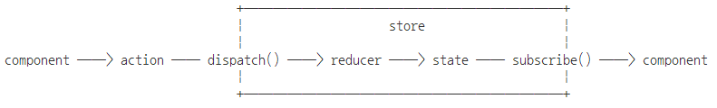

react에서 redux를 사용할 때 주로 사용되는 readct-redux 패키지의 사용법에 대해서 알아본다.
readct-redux 를 사용하여 프로그램을 만들어 본다.
React-Redux 코딩 순서
1. Redux 플러그인 추가 or import.
2. component 만들기
3. action 과 actionCreater 만들기
4. state 만들기
5. reducer 만들기
6. store 만들기
7. mapStateToProps, apDispatchToProps 정의하기
mapStateToProps: store의 state를 component에 전달
mapDispatchToProps: action을 store에 전달하는 역할인 dispatch 생성
8. 컴포넌트와 리덕스 connect 하기
9. 컴포넌트에 store Provider 하기
<ReactRedux.Provider store={store}>
// 중략...
</ReactRedux.Provider>
<div>
<input type="button" value="+" onClick={this.handlerClickIncrement} />
<input type="button" value="-" onClick={this.handlerClickDecrement} />
<div>
{counter.count}
</div>
</div>
